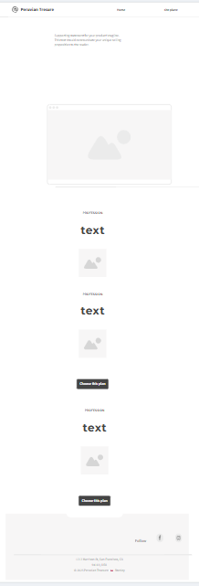

Site Name
Peruvian Treasures - Celebrating Peru's cultural heritage, crafts, and natural wonders.
Site Purpose
The website aims to promote and showcase the richness of Peruvian traditions, offering information, products, and travel inspiration related to Peru’s cultural and natural treasures.
Scenario
From which regions of Peru do these pieces come, and who are the artisans who make them?
Can I learn the history and cultural significance behind each product?
Color Scheme
Primary
Secondary
Accent 1
Accent 2
Typeface
Background
Typography
- Headings: Montserrat
- Body Text: Open Sans
- Accent Text: Playfair Display
wireframes
Below are the wireframes for mobile and desktop layouts:
